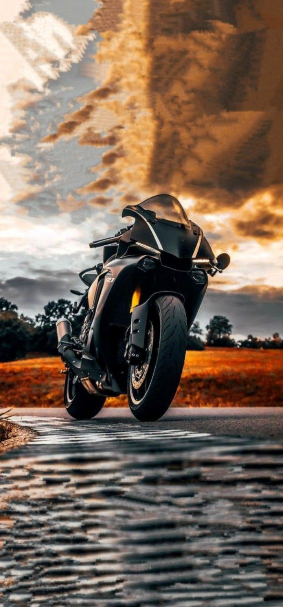
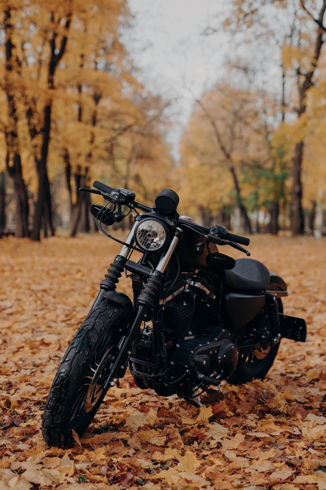
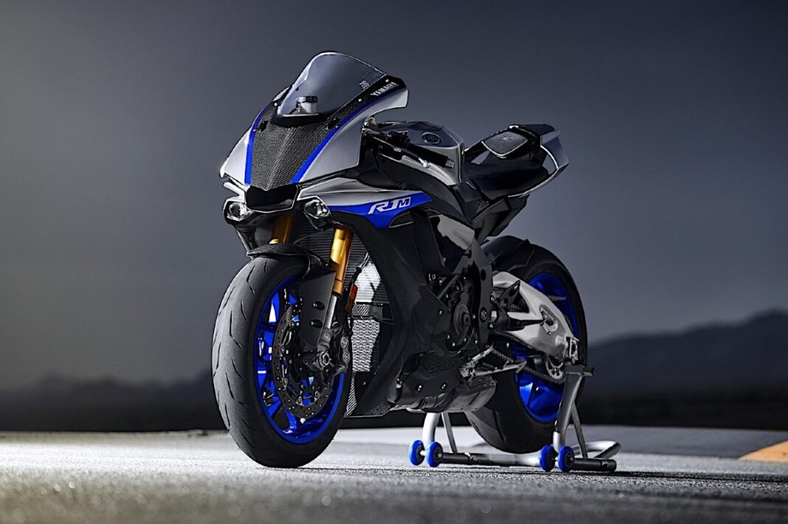
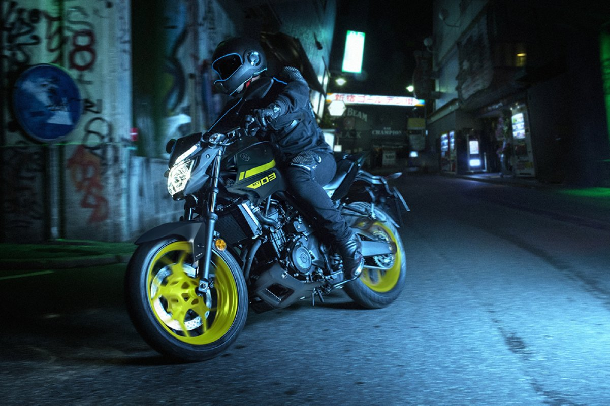
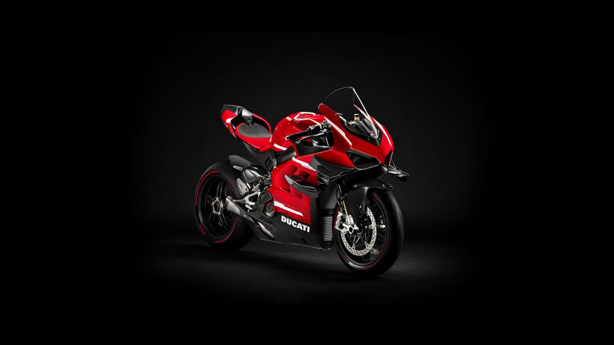
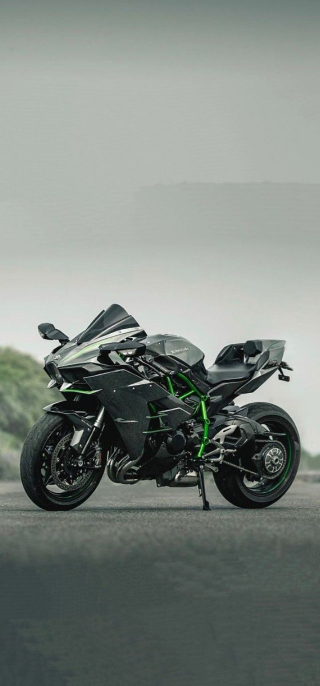

二輪の道
Las mejores motos de dos ruedas · 最速の二輪

単 Foto de la motoSuperbike japonesa muy conocida por su equilibrio entre potencia y control. Destaca por su diseño agresivo y tecnología derivada de MotoGP.
Tipo · タイプ
速 Foto de la motoCruiser moderna con estilo musculoso y urbano. Lo especial es su mezcla entre diseño clásico americano y rendimiento actual.
Tipo · タイプ
風 Foto de la motoDeportiva ligera y muy ágil. Destaca por su estética racing y manejo preciso tanto en calle como circuito.
Tipo · タイプ
道 Foto de la motoNaked agresiva y muy popular por su aceleración brutal y conducción divertida. Tiene un look streetfighter moderno.
Tipo · タイプ
力 Foto de la motoUna de las superbikes más icónicas del mundo. Resalta por su potencia extrema, diseño italiano y tecnología de competición.
Tipo · タイプ
疾 Foto de la motoHiperdeportiva sobrealimentada famosa por su velocidad y estética futurista. Destaca por su motor con supercharger.
Tipo · タイプ